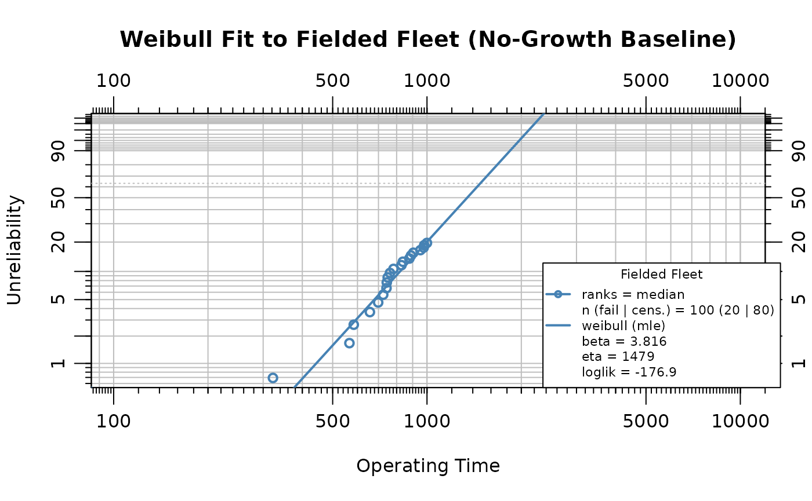
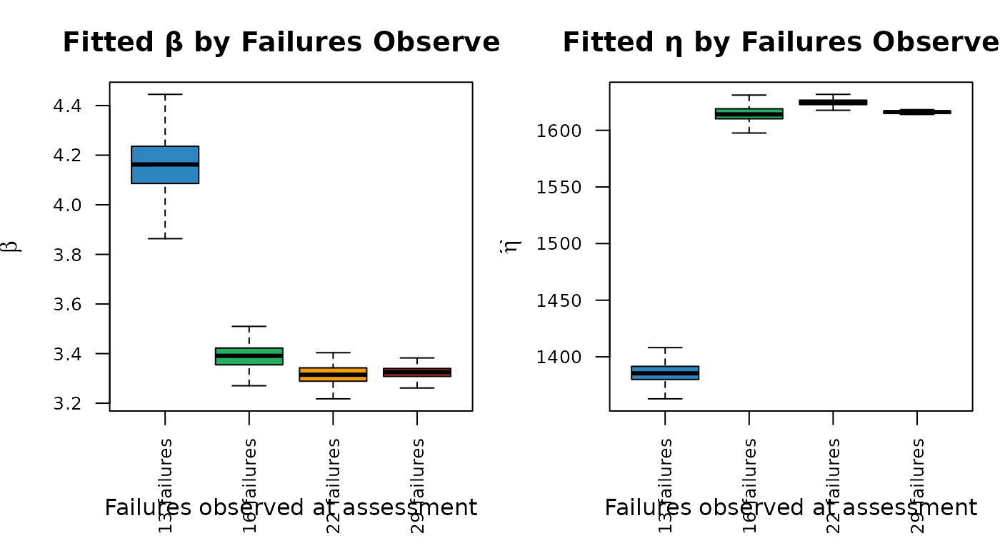

Introduction
Reliability Growth Analysis (RGA) tracks the improvement of system reliability over a development program as design changes are introduced. However, translating an observed growth trend into a fleet-level life forecast requires several additional steps that are often performed separately, leading to potential inconsistencies, loss of fidelity in reliability projections, and an incomplete picture of future system performance. This study presents an integrated workflow that connects RGA to life estimation through stochastic simulation, propagating an observed reliability growth trend into a fleet-level life distribution.
The example is structured in two phases, both involving
non-repairable units. In the developmental growth test
(Phase 1), prototypes are built and tested to failure in sequence;
design improvements introduced between builds genuinely increase unit
life, so the Crow-AMSAA growth parameter
reflects a real improvement trend rather than an artifact of how the
data are pooled. In the fielded fleet (Phase 2), a
population of the matured design is placed in service, and the growth
trend established in development is projected forward to forecast the
fleet’s life distribution. Over a fixed forecast window the growth model
lowers the number of additional failures expected from the fleet’s own
life distribution, sim_failures() generates conditional
failure times for the surviving units over that window, and the
simulated failures are combined with observed data to fit a
growth-adjusted Weibull distribution. A parallel Weibull fit without
growth provides a baseline. Monte Carlo analysis quantifies the
variability introduced by the simulation (and, to a lesser extent,
growth-parameter uncertainty), and sensitivity analyses examine how the
results depend on the fleet assessment point and the strength of the
growth trend. Because the projection is conditional on the observed
growth continuing into service, it is designed to address the potential
underestimation of future reliability that results when growth trends
are not propagated into fleet-level forecasts; the workflow is intended
to make that dependence explicit and to quantify the variability of the
projection rather than to assert a single point forecast. The forecast
should be read as conditional on the developmental growth trend
continuing in service.
Developmental Growth Test
In a developmental reliability growth program, prototype units are
built and tested to failure one at a time. After each failure the design
is analyzed and improved, so successive builds are progressively more
reliable. We represent this by simulating 30 sequential builds in which
the characteristic life
of the underlying wear-out mechanism increases with build index, while
the shape (failure mechanism) is held fixed. Because only one unit is on
test at a time, the total time on test is simply the running sum of the
individual lives, and the data are passed directly to rga()
— no concurrent-fleet conversion is involved.
set.seed(3)
N_dev <- 30 # prototypes built and tested in sequence
beta_mech <- 4 # wear-out failure mechanism (shape), constant across builds
eta_matured <- 1456 # characteristic life of the final, matured design
g_exp <- 0.30 # strength of design-life improvement with build index
# Design life improves with build index; the last build is the matured design.
eta_build <- eta_matured * (seq_len(N_dev) / N_dev)^g_exp
dev_life <- eta_build * (-log(runif(N_dev)))^(1 / beta_mech)
dev_cum <- cumsum(dev_life)The Crow-AMSAA model is fitted directly with rga(),
treating each build as one failure at its cumulative test time. The
cumulative failure function is
,
where
indicates a decreasing failure intensity — genuine reliability
growth.
dev_fit <- rga(
data.frame(times = dev_cum, failures = rep(1, N_dev)),
times_type = "cumulative_failure_times"
)
growth_beta <- as.numeric(dev_fit$betas)
dev_r2 <- summary(dev_fit$model)$r.squared
plot(dev_fit,
main = "Developmental Reliability Growth Test",
xlab = "Cumulative Test Time", ylab = "Cumulative Failures"
)The fitted growth parameter is = 0.821 ( = 0.997), indicating a decreasing failure intensity as the design matured. The reliability growth rate is = 0.179.
Fielded Fleet and Life Data Analysis
The matured design — the configuration reached at the end of the developmental test — is now placed into service as a fleet of 100 units, each observed over a 1000 time-unit period. These are non-repairable units: each either fails once or is right-censored (suspended) at the end of the observation window. To provide a reproducible example, the fleet life data are simulated from the matured Weibull population (shape 4, scale 1456). Because this population is fixed — every unit is drawn from the same matured Weibull, with no further design change in service — its true characteristic life does not improve over the period, so the no-growth baseline fitted below coincides with the ground truth here and the growth-adjusted forecast is the optimistic bound that applies only if the developmental trend continues into service.
set.seed(8)
n_units <- 100
test_end <- 1000
fleet_life <- eta_matured * (-log(runif(n_units)))^(1 / beta_mech)
failures <- sort(fleet_life[fleet_life <= test_end])
suspensions <- rep(test_end, sum(fleet_life > test_end))
n_test_failures <- length(failures)
n_surviving <- length(suspensions)This draw yields 20 exact failures, leaving 80 surviving units at
risk during the forecast period. The WeibullR package fits
a Weibull distribution to the fielded data, providing the no-growth
baseline life distribution:
obj <- wblr(failures, suspensions,
col = "steelblue", label = "Fielded Fleet", is.plot.cb = FALSE
)
obj <- wblr.fit(obj, method.fit = "mle")
sim_beta <- obj$fit[[1]]$beta
eta_orig <- obj$fit[[1]]$eta
plot(obj,
main = "Weibull Fit to Fielded Fleet (No-Growth Baseline)",
xlab = "Operating Time", ylab = "Unreliability"
)
The estimated shape parameter is 3.816 and the scale parameter is 1479.4. A shape parameter greater than one confirms the wear-out failure mode. This Weibull describes the unit-level hazard in individual age and is distinct from the Crow-AMSAA , which describes the system-level failure-intensity trend over the development program.
Reliability Growth Forecast
The growth trend established in development is now projected onto the fielded fleet. The forecast is run over a fixed forecast window taken from the life data; over that window the fitted fleet Weibull sets the number of failures expected with no growth, and the developmental growth rate lowers that count through the Crow-AMSAA count-ratio.
The no-growth count is what the fitted fleet Weibull expects over the window, read from each surviving unit’s forward hazard (age ):
Growth lowers this count. Re-anchoring the Crow-AMSAA scale to the fleet (, with the fleet’s cumulative operating time and the failures observed so far), the expected additional failures over the cumulative window are with . Expressed as a ratio to the no-growth case — which cancels the since-inception anchoring bias — the growth count-ratio is
and the growth-adjusted target count is .
# Forecast window: a modest forward increment (~20% of the observation period) applied to
# each surviving unit, taken from the life data rather than solved for.
forecast_window <- 200
test_end_cum_time <- sum(c(failures, suspensions))
# No-growth count the fitted fleet Weibull expects over the window (forward hazard).
expected_failures <- function(w, eta, r, beta) {
sum(1 - exp(-(((r + w) / eta)^beta - (r / eta)^beta)))
}
# Scale that reproduces a target expected count over the window.
solve_eta <- function(target, r, beta, window) {
uniroot(function(eta) expected_failures(window, eta, r, beta) - target,
interval = c(1e-3, 1e9)
)$root
}
# Crow-AMSAA growth count-ratio: growth lowers the expected count; equals 1 at beta_growth = 1.
count_ratio <- function(bg, rho) ((1 + rho)^bg - 1) / rho
f0 <- expected_failures(forecast_window, eta_orig, rep(test_end, n_surviving), sim_beta)
rho <- (n_surviving * forecast_window) / test_end_cum_time
n_expected <- f0 * count_ratio(growth_beta, rho)
n_forecast <- round(n_expected)
n_target <- n_test_failures + n_forecastOver the forecast window of = 200 operating time units, the fitted fleet Weibull expects = 16.2 failures with no growth. The growth count-ratio is = 0.81, lowering the growth-adjusted target to = 13 additional failures, for a total of 33 cumulative failures. Because at , with no growth the target reduces to and the calibrated scale returns the fitted fleet value, so the growth-adjusted distribution then recovers the no-growth baseline exactly.
Underlying the fleet projection is the developmental growth model
itself, which predict_rga() extrapolates to forecast
continued failure accumulation. The figure shows the Crow-AMSAA model
fitted to the 30 developmental builds and forecast forward to 43
cumulative failures (i.e. 13 further failures along the same trend),
with the model’s confidence bounds.
dev_target <- N_dev + n_forecast
t_f_dev <- (dev_target / as.numeric(dev_fit$lambdas))^(1 / growth_beta)
dev_forecast_times <- seq(max(dev_cum) * 1.001, t_f_dev, length.out = 50)
fc <- predict_rga(dev_fit, times = dev_forecast_times)
plot(fc,
main = "Reliability Growth Forecast",
xlab = "Cumulative Test Time", ylab = "Cumulative Failures"
)Simulating Failures
The sim_failures() function generates conditional
Weibull failure times for the surviving units. Each unit has already
accumulated 1000 operating time units, and the simulation draws failure
times from the conditional Weibull distribution over the forecast
window. We calibrate the Weibull scale parameter
to the growth-adjusted expected count over the window and pass it in (at
this returns the fitted fleet scale exactly), then draw the integer
number of failures.
set.seed(123)
sim_eta <- solve_eta(n_expected, rep(test_end, n_surviving), sim_beta, forecast_window)
sim_result <- sim_failures(
n = n_forecast,
runtimes = rep(1000, n_surviving),
window = forecast_window,
beta = sim_beta,
eta = sim_eta
)The calibrated scale parameter is = 1573.3, compared to the original baseline estimate of = 1479.4. The increase in is the mechanical consequence of the assumed growth: growth lowers the expected failure count over the fixed window, so a larger characteristic life is required to reproduce the reduced count. Of the 80 surviving units, 13 receive simulated failure times and 67 are right-censored at the end of the forecast window.
The simulated failures are combined with the 20 observed failures:
sim_fail_times <- sim_result$runtime[sim_result$type == "Failure"]
sim_susp_times <- sim_result$runtime[sim_result$type == "Suspension"]
combined_failures <- c(failures, sim_fail_times)
combined_suspensions <- sim_susp_timesWeibull Comparison
Two Weibull models are fitted to contrast the effect of reliability growth:
- Without growth: fitted to the fielded fleet data (20 failures, 80 suspensions at ). This represents the life distribution implied by the fleet alone, without projecting the growth trend forward.
- With growth: fitted to the combined dataset (20 observed failures + 13 simulated failures + 67 suspensions). This represents the life distribution when growth-adjusted failure times are included.
# Headline comparison is like-for-like: a 2-parameter Weibull fitted by MLE to both the
# fielded fleet (no-growth baseline) and the growth-augmented data, so the two fits differ
# only in their data, not in parameterization or estimation method.
obj_nogrowth <- wblr(failures, suspensions,
col = "grey40", label = "Without Growth", is.plot.cb = FALSE
)
obj_nogrowth <- wblr.fit(obj_nogrowth, method.fit = "mle")
obj_growth <- wblr(combined_failures, combined_suspensions,
col = "tomato", label = "With Growth (2P)", is.plot.cb = FALSE
)
obj_growth <- wblr.fit(obj_growth, method.fit = "mle")
plot.wblr(list(obj_nogrowth, obj_growth),
main = "Weibull Comparison: With vs. Without Reliability Growth",
is.plot.legend = TRUE
)
growth_wb_beta <- obj_growth$fit[[1]]$beta
growth_wb_eta <- obj_growth$fit[[1]]$eta
nogrowth_wb_beta <- obj_nogrowth$fit[[1]]$beta
nogrowth_wb_eta <- obj_nogrowth$fit[[1]]$eta
# B10 life (10th-percentile life): t such that F(t) = 0.10.
b10 <- function(beta, eta, t0 = 0) t0 + eta * (-log(0.90))^(1 / beta)
nogrowth_b10 <- b10(nogrowth_wb_beta, nogrowth_wb_eta)
growth_b10 <- b10(growth_wb_beta, growth_wb_eta)
params <- data.frame(
Scenario = c("Without Growth (2P)", "With Growth (2P)"),
Beta = round(c(nogrowth_wb_beta, growth_wb_beta), 3),
Eta = round(c(nogrowth_wb_eta, growth_wb_eta), 1),
B10 = round(c(nogrowth_b10, growth_b10), 1)
)
knitr::kable(params,
caption = "Weibull parameters and B10 life: with vs. without reliability growth (two-parameter MLE)",
col.names = c("Scenario", "β", "η", "B10"),
row.names = FALSE
)| Scenario | β | η | B10 |
|---|---|---|---|
| Without Growth (2P) | 3.816 | 1479.4 | 820.3 |
| With Growth (2P) | 3.598 | 1548.0 | 828.2 |
Under the assumed continued growth, the fleet accumulates fewer failures over the forecast window than its no-growth life distribution predicts, producing a larger estimated (rightward shift in the life distribution). This shift is a mechanistic consequence of calibrating the simulation to the growth-reduced failure count rather than an independently discovered effect; the analysis quantifies its size, it does not establish its existence.
To keep the comparison like-for-like, both the no-growth baseline and the growth-augmented data are fitted with a two-parameter Weibull by maximum likelihood, so the two fits differ only in their data — not in parameterization or estimation method. The B10 life — the 10th-percentile life, — is the headline growth indicator, rising from 820.3 (without growth) to 828.2 (with growth).
Because the combined dataset merges field failures (generated under the matured failure distribution) with simulated post-growth failures (generated under a larger ), the two populations produce a concave-downward (mixture) pattern on a Weibull probability plot, which the two-parameter fit accommodates with a depressed shape ( falls from 3.82 to 3.6). The two-parameter B10 is retained because it is stable across estimation methods and matches the two-parameter fits used in the Monte Carlo and sensitivity analyses.
Monte Carlo Analysis
A single call to sim_failures() produces one realization
of the 13 simulated failure times. Different random draws yield
different combined datasets and therefore different Weibull parameter
estimates. The Monte Carlo analysis repeats the procedure 500 times to
characterize this variability. Two sources are propagated: the
randomness of the conditional simulation and the estimation uncertainty
in the developmental growth parameter
.
Here the growth trend is estimated very precisely — the developmental
fit pins
down tightly (small standard error) — so the spread is dominated by the
conditional simulation, with growth-parameter uncertainty included for
completeness but contributing little. The result should be read as a
forecast variability band rather than a formal confidence interval.
Run the Monte Carlo Loop
Each iteration resamples the growth parameter from its sampling distribution, recomputes the growth-adjusted failure count over the fixed window, then draws a new set of simulated failure times, combines them with the 20 observed failures, and fits a Weibull distribution. Both and are freely estimated in every iteration. The Monte Carlo and sensitivity loops use the two-parameter MLE fit, matching the headline comparison above, so the B10 life is directly comparable throughout.
set.seed(99)
n_mc <- 500
mc_results <- vector("list", n_mc)
# Sampling distribution of the developmental growth parameter.
betag_hat <- as.numeric(dev_fit$betas)
betag_se <- as.numeric(dev_fit$betas_se)
for (i in seq_len(n_mc)) {
tryCatch(
{
# Draw a growth parameter and recompute the growth-adjusted count over the window.
beta_i <- rnorm(1, betag_hat, betag_se)
if (beta_i <= 0) stop("non-positive growth parameter draw")
target_i <- f0 * count_ratio(beta_i, rho)
if (!is.finite(target_i) || target_i <= 0) stop("non-positive count draw")
mc_results[[i]] <- sim_and_fit(
failures, target_i, rep(1000, n_surviving), forecast_window, sim_beta
)
},
error = function(e) NULL
)
}
mc_df <- do.call(rbind, Filter(Negate(is.null), mc_results))Visualize the Parameter Distributions
Histograms of the fitted and across all valid iterations show the spread introduced by the combined growth-parameter and simulation variability. The dashed line marks the Monte Carlo median, and the dotted grey line marks the no-growth baseline.
par(mfrow = c(1, 2), mar = c(4, 4, 3, 1))
hist(mc_df$beta,
breaks = "Sturges", col = "steelblue", border = "white",
main = "MC Distribution of β",
xlab = expression(hat(beta)), ylab = "Count", freq = TRUE
)
abline(v = median(mc_df$beta), lty = 2, lwd = 2)
abline(v = nogrowth_wb_beta, lty = 3, lwd = 2, col = "grey40")
hist(mc_df$eta,
breaks = "Sturges", col = "tomato", border = "white",
main = "MC Distribution of η",
xlab = expression(hat(eta)), ylab = "Count", freq = TRUE
)
abline(v = median(mc_df$eta), lty = 2, lwd = 2)
abline(v = nogrowth_wb_eta, lty = 3, lwd = 2, col = "grey40")
Monte Carlo Summary
mc_df$b10 <- b10(mc_df$beta, mc_df$eta)
mc_summary <- data.frame(
Parameter = c("β", "η", "B10"),
NoGrowth = round(c(nogrowth_wb_beta, nogrowth_wb_eta, nogrowth_b10), 3),
Median = round(c(median(mc_df$beta), median(mc_df$eta), median(mc_df$b10)), 3),
Mean = round(c(mean(mc_df$beta), mean(mc_df$eta), mean(mc_df$b10)), 3),
CI_lo = round(c(
quantile(mc_df$beta, 0.025),
quantile(mc_df$eta, 0.025),
quantile(mc_df$b10, 0.025)
), 3),
CI_hi = round(c(
quantile(mc_df$beta, 0.975),
quantile(mc_df$eta, 0.975),
quantile(mc_df$b10, 0.975)
), 3)
)
knitr::kable(mc_summary,
caption = paste0(
"Monte Carlo summary of Weibull parameters and B10 life (",
nrow(mc_df), " valid iterations)"
),
col.names = c(
"Parameter", "No Growth", "Median", "Mean", "2.5%", "97.5%"
),
row.names = FALSE
)| Parameter | No Growth | Median | Mean | 2.5% | 97.5% |
|---|---|---|---|---|---|
| β | 3.816 | 3.550 | 3.552 | 3.463 | 3.647 |
| η | 1479.424 | 1550.057 | 1550.144 | 1543.172 | 1556.901 |
| B10 | 820.290 | 822.244 | 822.541 | 812.750 | 832.969 |
The Monte Carlo distributions quantify how much the growth-adjusted Weibull estimates vary across repeated simulations, here almost entirely from the stochastic simulation rather than from growth-parameter estimation uncertainty. These bands represent the variability of the forecast conditional on the fitted growth model and the assumed growth continuation, not inferential confidence intervals. They quantify the repeatability of the method and the sensitivity of the forecast to simulation randomness, but they do not assess the accuracy of the growth assumption itself. They should be read as forecast variability bands conditional on the fitted model and the assumed growth scenario, not as inferential confidence intervals or a hypothesis test; in particular, model-form uncertainty (the choice of the Crow-AMSAA power law) is not represented. The separation between the no-growth baseline and the Monte Carlo distribution of reflects the genuine growth reduction in the failure count (); with no growth the target reduces to and the distribution centers on the baseline.
Sensitivity Analysis
The preceding Monte Carlo analysis held the fleet assessment fixed while resampling the growth parameter and the simulated failure draws. This section examines how two key inputs affect the growth-adjusted Weibull: (a) the fleet assessment point — how many failures have been observed when the forecast is made — and (b) the Crow-AMSAA growth parameter.
Effect of Fleet Assessment Point
The point at which the fleet is assessed determines how many failures have been observed and how much operating time has accrued, which together set the re-anchored and the length of the extrapolation. The same fleet is assessed at four service points, yielding progressively more observed failures.
assessment_times <- c(850, 950, 1050, 1150)
fleet_obs <- vapply(assessment_times, function(te) sum(fleet_life <= te), integer(1))
fleet_labels <- paste0(fleet_obs, " failures")For each assessment point the fleet is censored at that service time, the no-growth Weibull is fitted, is re-anchored (importing from the developmental test), the horizon is forecast for a fixed 13 additional failures, and the combined Weibull is fitted. A Monte Carlo loop of 200 iterations per scenario captures the simulation variability.
set.seed(42)
n_mc_sens <- 200
sens_fleet_list <- lapply(seq_along(assessment_times), function(k) {
te <- assessment_times[k]
fail_te <- sort(fleet_life[fleet_life <= te])
susp_te <- rep(te, sum(fleet_life > te))
n_obs <- length(fail_te)
n_surv <- length(susp_te)
obj_te <- wblr.fit(wblr(fail_te, susp_te, is.plot.cb = FALSE), method.fit = "mle")
beta_te <- obj_te$fit[[1]]$beta
eta_te <- obj_te$fit[[1]]$eta
if (n_surv <= 0) {
return(NULL)
}
# No-growth count over the fixed window from this assessment's own fitted baseline,
# lowered by the growth count-ratio at this assessment's cumulative exposure.
f0_te <- expected_failures(forecast_window, eta_te, rep(te, n_surv), beta_te)
rho_te <- (n_surv * forecast_window) / sum(c(fail_te, susp_te))
target_te <- f0_te * count_ratio(growth_beta, rho_te)
if (!is.finite(target_te) || target_te <= 0) {
return(NULL)
}
rows <- lapply(seq_len(n_mc_sens), function(i) {
tryCatch(
{
r <- sim_and_fit(fail_te, target_te, rep(te, n_surv), forecast_window, beta_te)
cbind(scenario = fleet_labels[k], r)
},
error = function(e) NULL
)
})
do.call(rbind, Filter(Negate(is.null), rows))
})
sens_fleet_df <- do.call(rbind, Filter(Negate(is.null), sens_fleet_list))
sens_fleet_df$scenario <- factor(sens_fleet_df$scenario, levels = fleet_labels)
par(mfrow = c(1, 2), mar = c(5, 4, 3, 1))
fleet_cols <- c("#2E86C1", "#27AE60", "#F39C12", "#C0392B")
boxplot(beta ~ scenario,
data = sens_fleet_df,
col = fleet_cols, outline = FALSE,
main = "Fitted β by Failures Observed",
xlab = "Failures observed at assessment", ylab = expression(hat(beta)),
las = 2, cex.axis = 0.8
)
boxplot(eta ~ scenario,
data = sens_fleet_df,
col = fleet_cols, outline = FALSE,
main = "Fitted η by Failures Observed",
xlab = "Failures observed at assessment", ylab = expression(hat(eta)),
las = 2, cex.axis = 0.8
)
Across the four assessment points the growth count-ratio is essentially constant (), so the growth adjustment itself is robust to when the fleet is assessed; the visible variation is inherited from the baseline Weibull fit, which is depressed by the heavy censoring of an early assessment (few observed failures) and stabilizes once enough failures have accrued. A dependable growth forecast therefore depends less on the assessment timing than on having enough observed failures to pin down the fleet’s baseline life distribution.
Effect of Growth Parameter
The Crow-AMSAA growth parameter controls the growth count-ratio : stronger growth (smaller ) lowers the expected failure count over the fixed window, producing fewer simulated failures and a larger . Four growth scenarios are examined while holding all other inputs at their base values; each scales the same no-growth count by its ratio , so the scenarios differ only in the growth strength.
growth_scenarios <- c(0.4, 0.6, 0.8, 1.0)
growth_labels <- c(
"βg = 0.4 (strong)",
"βg = 0.6 (moderate)",
"βg = 0.8 (mild)",
"βg = 1.0 (none)"
)
set.seed(77)
sens_growth_list <- lapply(seq_along(growth_scenarios), function(k) {
gb <- growth_scenarios[k]
# Lower the fixed-window no-growth count by the growth ratio for this scenario.
target_k <- f0 * count_ratio(gb, rho)
if (target_k <= 0) {
return(NULL)
}
rows <- lapply(seq_len(n_mc_sens), function(i) {
tryCatch(
{
r <- sim_and_fit(
failures, target_k, rep(1000, n_surviving), forecast_window, sim_beta
)
cbind(scenario = growth_labels[k], r)
},
error = function(e) NULL
)
})
do.call(rbind, Filter(Negate(is.null), rows))
})
sens_growth_df <- do.call(rbind, Filter(Negate(is.null), sens_growth_list))
sens_growth_df$scenario <- factor(sens_growth_df$scenario, levels = growth_labels)
par(mfrow = c(1, 2), mar = c(5, 4, 3, 1))
growth_cols <- c("#2E86C1", "#27AE60", "#F39C12", "#C0392B")
boxplot(beta ~ scenario,
data = sens_growth_df,
col = growth_cols, outline = FALSE,
main = "Fitted β by Growth Strength",
xlab = "Growth scenario", ylab = expression(hat(beta)),
las = 2, cex.axis = 0.75
)
boxplot(eta ~ scenario,
data = sens_growth_df,
col = growth_cols, outline = FALSE,
main = "Fitted η by Growth Strength",
xlab = "Growth scenario", ylab = expression(hat(eta)),
las = 2, cex.axis = 0.75
)
Stronger reliability growth (smaller ) lowers the expected failure count over the fixed window through the count-ratio , producing fewer simulated failures and a larger fitted in the combined Weibull. At (no growth), leaves the target at the forward-correct no-growth count , and the growth-adjusted distribution recovers the no-growth baseline — its median returns to the fitted fleet value up to Monte Carlo noise. Taking the no-growth count from the fleet’s forward hazard rather than the Crow-AMSAA since-inception average rate is what removes the offset that a purely cumulative-rate target would leave at , so the reported shift at is attributable entirely to the estimated growth trend.
Limitations
Extrapolation uncertainty. The reliability growth forecast extrapolates the developmental improvement trend beyond the test horizon and into service, so confidence in the forecast degrades with the length of the extrapolation. Assessing the fleet earlier, when fewer failures have been observed, produces a longer extrapolation and a correspondingly larger, more uncertain forecast, so practitioners should limit the extrapolation to a multiple of the observed cumulative operating time to avoid unreliable forecasts. The simulation results should be interpreted as conditional on the growth trend continuing unchanged.
Model risk. The Crow-AMSAA power-law model is one of several possible reliability growth models. Alternative models (e.g., piecewise, AMSAA-Bingham) may yield different growth count-ratios and therefore different simulated life distributions. Future work could involve comparing the robustness of forecasts across different growth models or incorporating model uncertainty into the overall forecast.
Homogeneous fleet. The simulation assumes all surviving units follow a single conditional Weibull distribution. If the fleet contains distinct subpopulations (e.g., different duty cycles or hardware revisions), separate analyses should be performed for each group.
Continued-growth assumption. The forecast assumes the developmental growth trend continues to be reflected in field reliability. If the design is frozen at fielding and no further improvement occurs, the projection overstates the gain; the no-growth baseline then applies. The forecast is best read as the optimistic bound under continued improvement.
Repair policy. The simulation assumes failed units are not replaced. The combined dataset treats all simulated failures as first-failure events for each unit.
Remaining uncertainty sources. The Monte Carlo analysis propagates estimation uncertainty in the growth parameter , but because the developmental trend is estimated precisely that contribution is small here and the spread is dominated by the conditional simulation. Two further sources remain unrepresented. First, model-form uncertainty (the choice of the Crow-AMSAA power law) is not captured. Second, the input Weibull shape parameter passed to
sim_failures()is held fixed at its fielded-fleet estimate across iterations rather than resampled; future enhancements could sample this input shape from a distribution to more fully capture its variability. Holding the shape fixed is also a structural modeling choice, distinct from that sampling question: reliability growth is treated as a scale effect that lengthens the characteristic life while leaving the failure-mode shape unchanged. A design change that reshapes the failure mode — rather than delaying it — would move the shape in a mode-specific direction that the growth parameter does not determine, and is out of scope.Mixture distribution. The combined dataset is a mixture of fielded and post-growth failure populations, which produces downward curvature on the Weibull plot. The headline comparison uses a two-parameter fit for both scenarios, so they differ only in their data, but the two-parameter model is mis-specified for the growth-augmented data. The two-parameter B10 (828) is retained because it is stable across estimation methods, though it may underestimate the true B10 of the growth-augmented distribution. This trade-off is inherent to the mixture structure and cannot be avoided without separating the pre-growth and post-growth subpopulations, which would require a different analysis framework.
Conclusion
This analysis demonstrated an end-to-end reliability growth
forecasting pipeline. A developmental growth test of sequential
prototypes established a genuine reliability growth trend
(),
which was then projected onto a fielded fleet of the matured design.
Over a fixed forecast window the Crow-AMSAA growth model lowered the
number of additional failures expected from the fleet’s own life
distribution, and sim_failures() generated conditional
Weibull failure times for the surviving units over that window.
Combining the simulated failures with the observed fleet data produced a
growth-adjusted Weibull distribution, summarized by the B10 life from a
like-for-like two-parameter fit, that was compared against a no-growth
baseline fitted to the fleet data alone. The upward shift relative to
the baseline is a mechanistic consequence of the growth-reduced failure
count over the window; the Monte Carlo analysis quantified its
variability (dominated by the stochastic simulation, since the growth
trend is tightly estimated), and sensitivity analyses showed how the
results depend on the fleet assessment point and the strength of the
growth trend. Together, these components provide a repeatable
methodology for translating an observed reliability growth trend into
fleet-level life distribution estimates, with the forecast understood as
conditional on that trend continuing into service.